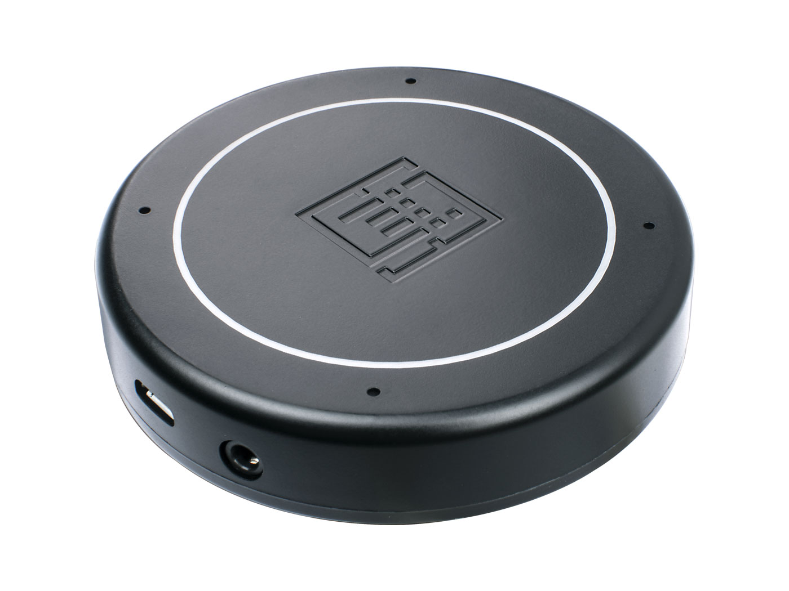

Apollo 6.0 Microphone Installation
Supported Devices
The Re-Speaker USB Mic Array https://wiki.seeedstudio.com/ReSpeaker-USB-Mic-Array/

Connection
Use the provided USB cable and connect the microphone to a USB port on the machine which is running Apollo. A USB extension cable may be needed depending on the application.
Setup
Follow the instructions provided here to update the firmware on the ReSpeaker to 48k_6_channels_firmware.bin